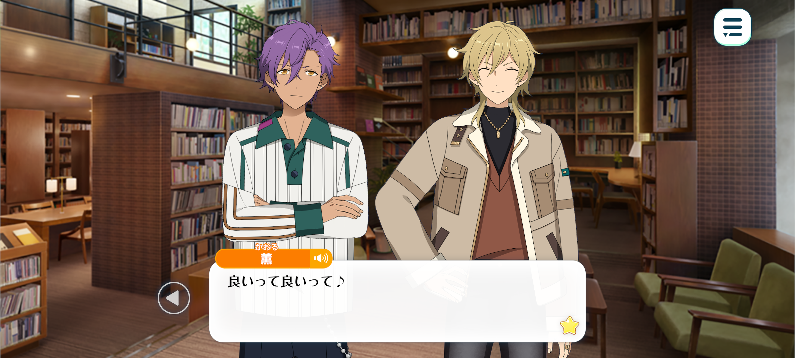
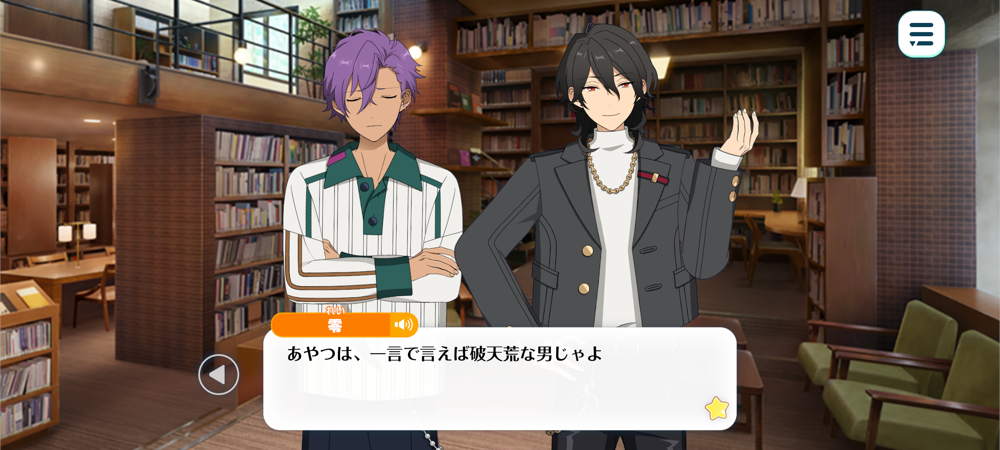
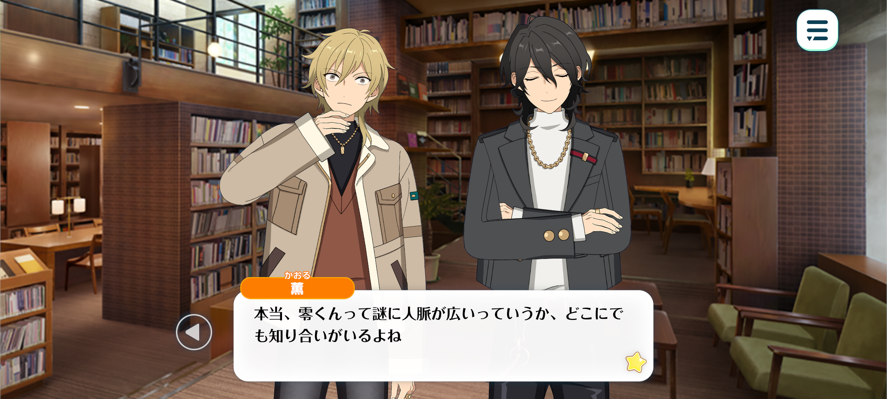
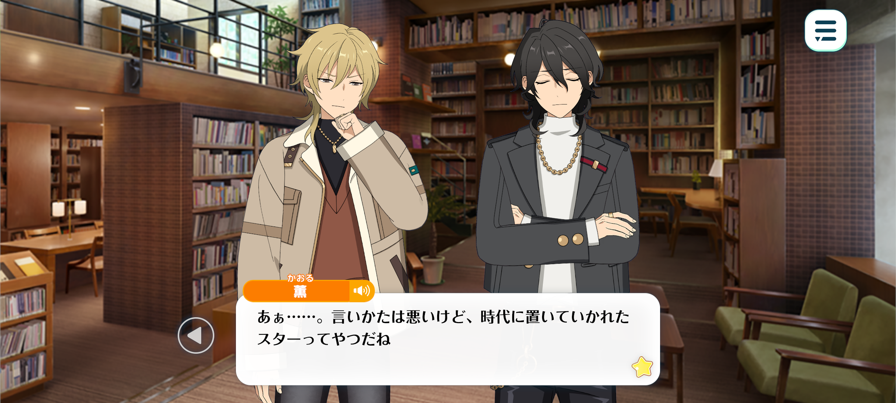
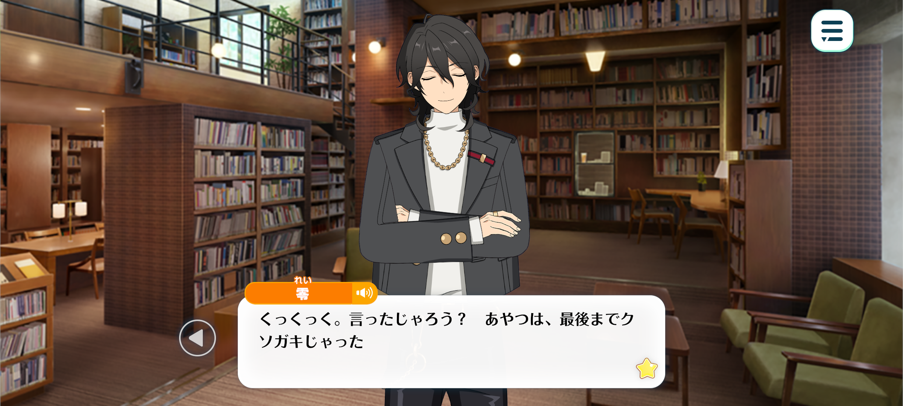

In Memoriam◆Handwriting, Chasing, Rambling
Good-Night / Chapter 2


Time: The next day
Location: Seisoukan Library

Adonis: …Sakuma-senpai, Hakaze-senpai, I apologise for asking for you to meet me on such short notice.
Kaoru: It’s all good ♪
The common room has lots of people coming and going so if we’re gonna have a bit more of a serious conversation, here’s much better.
Rei: Umu. The library’s primary use is for reading books so I imagine Hasumi-kun would have some choice words for us if he found us. Fortuitously, it seems we have the place to ourselves.
Now then, this meeting is to discuss Koga?
Adonis: Yes. I haven’t seen him since this morning.
He hasn’t returned my calls nor read my messages. I’m worried about him.
I spoke to Kazehaya-senpai and he said that last night Oogami was in a foul mood and had rushed out of their room and did not return.
Kaoru: Huh? What do you mean?
Did something happen? I’ve been swamped in work so I’ve not really been keeping track of what everyone else is up to.
Rei: Fumu… Yesterday, you were judging the middle school band contest, correct?
Adonis: Yes. Oogami and myself spent the entire day there.
During the performances, everything was fine—actually, Oogami was in rather high spirits.
But once we returned to the green room and we heard the news about his passing, his demeanour completely changed.
He’s been extremely agitated… I was worried about him but I did not imagine he would vanish in the way that he has.
Rei: His passing… Is this perhaps about MARBLING?
Kaoru: Uhh, that’s that foreign rock star, right?
That’s all people were talking about yesterday. Photos and videos were everywhere, all over the news and social media too.
MARBLING’s not really my generation so I don’t know him too well but for him to generate that much attention, he must have been an amazing artist.
Adonis: …Yesterday, before we saw the news, Oogami was talking about him.
He called him “gramps”, and he seemed very happy to talk about him.
He seemed very taken by MARBLING’s attitude towards life and his personality too, not just his musicianship.
I wanted to find out more about who he was as a person, but the news of death drowned out everything else.
In the end, I wasn’t able to find out anything about him.
I wanted to ask Oogami but I cannot do that right now.

Rei: To put it simply, he is an unconventional man.
No, I suppose I should say he was unconventional. How sad that I must speak in the past now.
He was born in rural England with no ties to London, yet he rose to global prominence as a prodigy.
In Europe back then, he was all the rage with the rebellious youths.
He wasn’t known for his fashion style yet his usual garb of second-hand clothes became the latest trend.
A handsome man, with no shortage of accusations of love affairs and scandal. Though, he paid no mind to them.
Rock was his life. He simply paved his own path, paying no mind to other matters.
Even as a silver fox, deep down he remained a little devil to the very end ♪
Kaoru: Ahaha. You’re so silly, talking about him like you knew each other.
Rei: Kukuku. Actually, we did.

Kaoru: Huh~? I was only joking!
Gosh, I still don’t understand how you know so many people in so many different places.
Adonis: Neither do I. But you can never have too many connections.
Rei: Though it means you carry more burdens.
Every parting brings heartache. Like now, where I must bid farewell to a man who was dear to me.
Though, one should not avoid making connections out of fear of goodbyes.
We are— well, everyone in this world, is supported by innumerable connections.
Back in MARBLING’s time, he was truly that generation's darling. He was the evening star, a symbol of hope for the pent-up frustration of the youths.
If you walked through town, you would hear his music wafting through the streets. Every young person wanted to follow in his footsteps.
However, to be liked by teenagers is to be looked at with disdain by adults.
He was mindlessly accused of increasing the number of hooligans, disrupting society, of corrupting the youths…
But the more he was criticised, the more teenagers longed for him.
He was a symbol of rebellion. Their disapproval only added to his appeal.
Though the invincible resistance from these young fans did not last forever.
As he grew older, he began to attract increasing attention from the public eye due to controversial behaviour, conflicts with his management agency, and a steady stream of gossip.
Some of the stories were true but they were often heavily embellished.
Meanwhile, the teens who loved him dearly began to grow up.
Their lives changed, which was accompanied by new values and new perspectives. Gradually, MARBLING became a relic of their youth.
The admiration that had once seemed unshakeable eventually gave way to ridicule.
Yet he continued unchanged, playing his music as he always had.

Kaoru: I see… Sounds like he’d been left behind by changing times.
Rei: Yes, I suppose that’s how it appeared to the public.
In the end, he went independent and established his own agency.
The brilliant stages of his past are no more, and he went venue to venue, performing in tiny livehouses that could barely fit a hundred people.
Adonis: …Many other people, if pushed to that point, would surely give up.

Rei: Kukuku. One would think so. But he was a brat to the very end.
No matter what the world said, he remained a man unwilling to compromise on his beliefs.
“If there’s no place where you belong, create it yourself.” With those words in mind, he set off to build a life abroad.
The media, naturally, wrote whatever stories they pleased. They claimed he went overseas for work and so on. Whenever these rumours reached him, he would simply scoff and say “let them believe whatever they want.”
He came to Japan many times. Even as his body grew older, he paid no mind to its limitations, and continued to sing at the very top of his lungs.
By every measure, he was an utterly outrageous man.
…The circumstances of his death have been kept from me.
But knowing him, I cannot help but imagine that he was still playing his guitar to the very end.